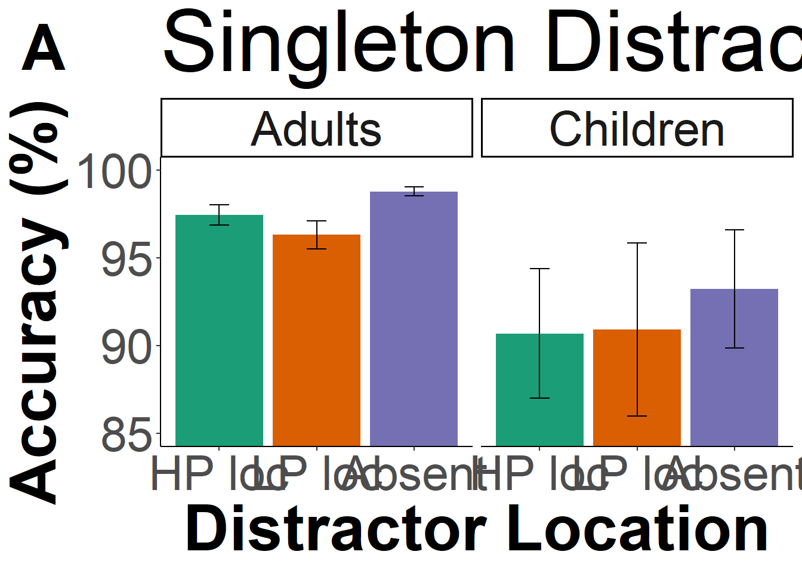
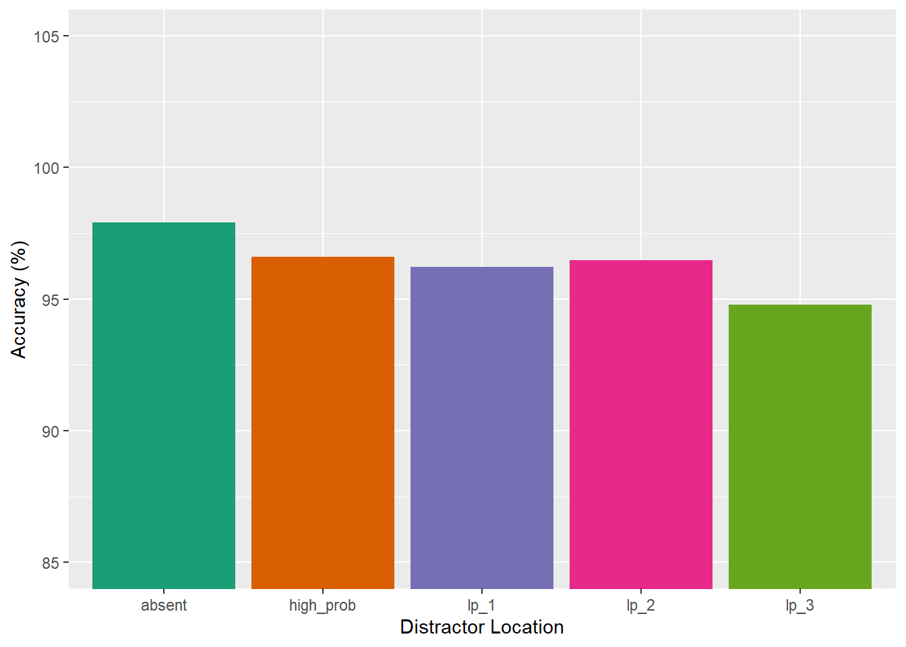
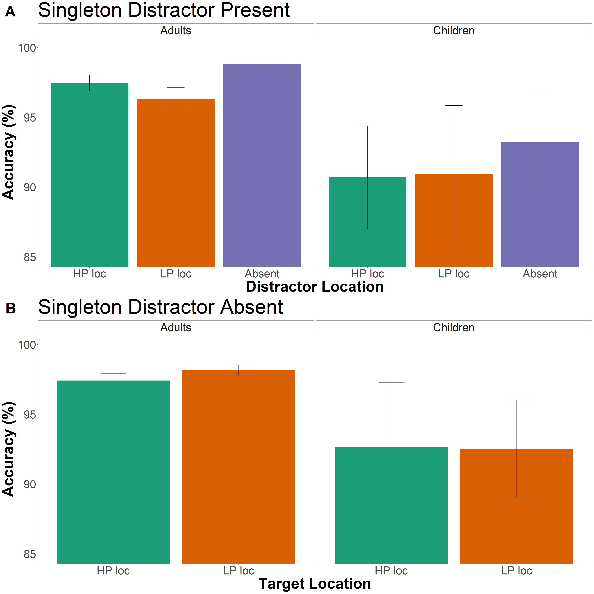

Portfolio 9
3.21.2023
The goal of this portfolio is to examine part of my thesis data. To recap, my thesis is examining distractor suppression in children and adults. Participants are shown a distractor in a location more frequently than other locations in a visual search array. Based on previous studies, we would expect adults to suppress their attention to the high-probability location, but we were unsure when in development children develop this ability.
library(tidyverse)
library(tidyr)
library(rstatix)
library(data.table)
library(afex)
library(emmeans)
library(psych)
library(ggprism)
library(patchwork)
library(magrittr)
library(cowplot)I put all the messy loading in of different data sets and adding in important columns to an R script instead of having it here.
kids12<- kids12 %>%
rename(
block_num=block_num1,
age=age1
)
kids6<- kids6 %>%
rename(
block_num=block_num2,
age=age2
)acc_data <- rbind(adults, kids12)Examine Accuracy Effects
acc_data<- acc_data%>%
filter(id != 26)
acc_data<-acc_data%>%
mutate(acc=acc*100)First, examine distractor location effects on accuracy.
distacc <- acc_data %>%
group_by(age,relative_hp_dist) %>%
summarize(accuracy = mean(acc),
sd_rt=sd(acc),
n_rt=32,
se=sd_rt/sqrt(n_rt),
upper_limit=accuracy+se,
lower_limit=accuracy-se
)## `summarise()` has grouped output by 'age'. You can override using the `.groups`
## argument.space <- acc_data %>%
group_by(age, id, relative_hp_dist) %>%
summarize(acc = mean(acc)
)## `summarise()` has grouped output by 'age', 'id'. You can override using the
## `.groups` argument.space_anova <- setDT(space)
space_anova <- dcast(space_anova,id+age~relative_hp_dist,value.var='acc')
space_anova <- space_anova %>%
mutate(low_prob = (lp_1+lp_2+lp_3)/3)
df_mod <- subset(space_anova, select=c(id, age, high_prob, absent, low_prob))
df_mod <- reshape2::melt(df_mod, id.var=c('id', 'age'), variable.name= "relative_hp_dist")sum_stats <- df_mod%>%
group_by(age, relative_hp_dist)%>%
summarize(mean_acc=mean(value),
sd_rt=sd(value),
n_rt=n(),
se=sd_rt/sqrt(n_rt),
upper_limit=mean_acc+se,
lower_limit=mean_acc-se
)## `summarise()` has grouped output by 'age'. You can override using the `.groups`
## argument.sum_stats## # A tibble: 6 × 8
## # Groups: age [2]
## age relative_hp_dist mean_acc sd_rt n_rt se upper_limit lower_limit
## <chr> <fct> <dbl> <dbl> <int> <dbl> <dbl> <dbl>
## 1 adult high_prob 97.4 2.97 27 0.572 98.0 96.9
## 2 adult absent 98.8 1.29 27 0.248 99.0 98.5
## 3 adult low_prob 96.3 4.15 27 0.798 97.1 95.5
## 4 child high_prob 90.7 8.26 5 3.69 94.4 87.0
## 5 child absent 93.2 7.55 5 3.38 96.6 89.8
## 6 child low_prob 90.9 11.0 5 4.92 95.8 86.0sum_stats$relative_hp_dist <- factor(sum_stats$relative_hp_dist, # Change ordering manually
levels = c("high_prob", "low_prob", "absent"))supp.labs <- c("Adults", "Children")
names(supp.labs) <- c("adult", "child")
a<-ggplot(data = sum_stats, aes(x = relative_hp_dist, y = mean_acc, fill=relative_hp_dist)) +
geom_bar(stat = "identity", show.legend = FALSE)+
geom_errorbar(aes(ymin=lower_limit, ymax=upper_limit), width=0.2)+
coord_cartesian(ylim = c(85,100))+
facet_grid(.~age, labeller = labeller(age=supp.labs)) +
theme_classic()+
theme(axis.text=element_text(size=30),
axis.title=element_text(size=40,face="bold"),
title = element_text(size = 24),
strip.text.x = element_text(size=30)) +
labs(x = "Distractor Location", y = "Accuracy (%)")+
labs(title = "Singleton Distractor Present")+
scale_fill_manual(values=c('#1b9e77', '#d95f02', '#66a61e')) +
scale_x_discrete(labels= c("high_prob"="HP loc","low_prob"="LP loc","absent"="Absent"))
plot_grid(a,labels = c('A'), label_size=40)
Run the 3x2 ANOVA on accuracy data.
model3 <- aov_car(value ~ age*relative_hp_dist + Error(id/relative_hp_dist), data=df_mod)## Converting to factor: age## Contrasts set to contr.sum for the following variables: agemodel3## Anova Table (Type 3 tests)
##
## Response: value
## Effect df MSE F ges p.value
## 1 age 1, 30 46.83 9.42 ** .206 .005
## 2 relative_hp_dist 1.64, 49.07 6.12 5.42 * .031 .011
## 3 age:relative_hp_dist 1.64, 49.07 6.12 0.46 .003 .596
## ---
## Signif. codes: 0 '***' 0.001 '**' 0.01 '*' 0.05 '+' 0.1 ' ' 1
##
## Sphericity correction method: GGMain effect of age is significant – Main effect of distractor location is significant – interaction is not significant.
Since the interaction was not significant, we’ll exclude age and test the distractor location effect on accuracy across the 5 conditions.
model4 <- aov_car(acc ~ relative_hp_dist + Error(id/relative_hp_dist), data=acc_data)## Warning: More than one observation per design cell, aggregating data using `fun_aggregate = mean`.
## To turn off this warning, pass `fun_aggregate = mean` explicitly.model4## Anova Table (Type 3 tests)
##
## Response: acc
## Effect df MSE F ges p.value
## 1 relative_hp_dist 2.37, 73.41 25.99 3.03 * .032 .046
## ---
## Signif. codes: 0 '***' 0.001 '**' 0.01 '*' 0.05 '+' 0.1 ' ' 1
##
## Sphericity correction method: GGAccuracy is different across all locations.
ggplot(acc_data, aes(relative_hp_dist, acc, fill=relative_hp_dist)) +
geom_bar(stat="summary", position="dodge") +
facet_grid(.~age) +
xlab("Distractor Location") + ylab("Accuracy (%)") +
scale_fill_brewer(palette="Dark2") +
theme(legend.position="none")+
coord_cartesian(ylim = c(85,105))## No summary function supplied, defaulting to `mean_se()`
## No summary function supplied, defaulting to `mean_se()`
For the 3 locations (HP, LP, and absent), run t-tests.
space_anova %>%
t.test(x=space_anova$low_prob, y=space_anova$high_prob, alternative="less", mu=0,paired = TRUE, conf.level = .95) ##
## Paired t-test
##
## data: space_anova$low_prob and space_anova$high_prob
## t = -1.7892, df = 31, p-value = 0.04168
## alternative hypothesis: true mean difference is less than 0
## 95 percent confidence interval:
## -Inf -0.04780453
## sample estimates:
## mean difference
## -0.9128781space_anova%>%
t.test(x=space_anova$high_prob, y=space_anova$absent, alternative="less", mu=0, paired =TRUE, conf.level = .95) ##
## Paired t-test
##
## data: space_anova$high_prob and space_anova$absent
## t = -3.2767, df = 31, p-value = 0.001295
## alternative hypothesis: true mean difference is less than 0
## 95 percent confidence interval:
## -Inf -0.7384317
## sample estimates:
## mean difference
## -1.530258space_anova%>%
t.test(x=space_anova$low_prob, y=space_anova$absent, alternative="less", mu=0, paired =TRUE, conf.level = .95)##
## Paired t-test
##
## data: space_anova$low_prob and space_anova$absent
## t = -3.6668, df = 31, p-value = 0.0004568
## alternative hypothesis: true mean difference is less than 0
## 95 percent confidence interval:
## -Inf -1.313422
## sample estimates:
## mean difference
## -2.443136Second, examine target location effects on accuracy.
spaceT <- acc_data %>%
group_by(age, id, relative_target) %>%
summarize(acc = mean(acc)
)## `summarise()` has grouped output by 'age', 'id'. You can override using the
## `.groups` argument.space_anovaT <- setDT(spaceT)
space_anovaT <- dcast(space_anovaT,id+age~relative_target,value.var='acc')
space_anovaT <- space_anovaT %>%
mutate(low_prob = (lp_1+lp_2+lp_3)/3)
df_mod_targ <- subset(space_anovaT, select=c(id, age, high_prob, low_prob))
df_mod_targ <- reshape2::melt(df_mod_targ, id.var=c('id', 'age'), variable.name= "relative_target")sum_statsT <- df_mod_targ%>%
group_by(age, relative_target)%>%
summarize(mean_acc=mean(value),
sd_rt=sd(value),
n_rt=n(),
se=sd_rt/sqrt(n_rt),
upper_limit=mean_acc+se,
lower_limit=mean_acc-se
)## `summarise()` has grouped output by 'age'. You can override using the `.groups`
## argument.sum_statsT## # A tibble: 4 × 8
## # Groups: age [2]
## age relative_target mean_acc sd_rt n_rt se upper_limit lower_limit
## <chr> <fct> <dbl> <dbl> <int> <dbl> <dbl> <dbl>
## 1 adult high_prob 97.4 2.71 27 0.521 97.9 96.9
## 2 adult low_prob 98.2 1.85 27 0.356 98.5 97.8
## 3 child high_prob 92.7 10.3 5 4.61 97.3 88.1
## 4 child low_prob 92.5 7.85 5 3.51 96.0 89.0b<-ggplot(data = sum_statsT, aes(x = relative_target, y = mean_acc, fill=relative_target)) +
geom_bar(stat = "identity", show.legend = FALSE)+
geom_errorbar(aes(ymin=lower_limit, ymax=upper_limit), width=0.2)+
coord_cartesian(ylim = c(85,100))+
facet_grid(.~age, labeller = labeller(age=supp.labs)) +
theme_classic()+
theme(axis.text=element_text(size=30),
axis.title=element_text(size=40,face="bold"),
title = element_text(size = 24),
strip.text.x = element_text(size=30)) +
labs(x = "Target Location", y = "Accuracy (%)")+
labs(title = "Singleton Distractor Absent")+
scale_fill_manual(values=c('#1b9e77', '#d95f02', '#66a61e')) +
scale_x_discrete(labels= c("high_prob"="HP loc","low_prob"="LP loc"))
plot_grid(a, b,labels = c('A','B'), label_size=40, ncol=1)
Run the 3x2 ANOVA on accuracy data.
model3 <- aov_car(value ~ age*relative_target + Error(id/relative_target), data=df_mod_targ)## Converting to factor: age## Contrasts set to contr.sum for the following variables: agemodel3## Anova Table (Type 3 tests)
##
## Response: value
## Effect df MSE F ges p.value
## 1 age 1, 30 28.93 7.92 ** .194 .009
## 2 relative_target 1, 30 2.80 0.28 <.001 .603
## 3 age:relative_target 1, 30 2.80 0.66 .002 .422
## ---
## Signif. codes: 0 '***' 0.001 '**' 0.01 '*' 0.05 '+' 0.1 ' ' 1For target location accuracy, there is only a main effect of age.
Children ages 6-7 Accuracy – Only 3 kids
kids6<- kids6%>%
filter(id != 30, block_num2 != 3, block_num2 != 4, block_num2 != 5,block_num2 != 6)
kids6<-kids6%>%
mutate(acc=acc*100)space_block6 <- kids6 %>%
group_by(id, block_num, relative_hp_dist) %>%
summarize(accs = mean(acc),
)## `summarise()` has grouped output by 'id', 'block_num'. You can override using
## the `.groups` argument.space_block6 <- setDT(space_block6)
space_block6 <- dcast(space_block6,id+block_num~relative_hp_dist,value.var='accs')space_block6 <- space_block6 %>%
mutate(low_prob = rowMeans(select(space_block6, c(lp_1,lp_2,lp_3)),na.rm=TRUE)) %>%
mutate(difference = (low_prob-high_prob))ggplot(data = space_block6,aes(x=block_num, y=difference, group=id))+
geom_line()+
labs(title = "Difference in Accuracies", subtitle = "for distractor presentation at the low-probability locations and high-probability location by block")+
theme_classic()+
labs(x = "Block Number", y = "Difference in Accuracy (%)")
space2 <- space_block6 %>%
group_by(block_num) %>%
summarize(rts = mean(difference, na.rm = TRUE),
sd_rt=sd(difference, na.rm = TRUE),
n_rt=3,
se=sd_rt/sqrt(n_rt),
upper_limit=rts+se,
lower_limit=rts-se
)
space2## # A tibble: 2 × 7
## block_num rts sd_rt n_rt se upper_limit lower_limit
## <dbl> <dbl> <dbl> <dbl> <dbl> <dbl> <dbl>
## 1 1 -14.8 17.5 3 10.1 -4.67 -24.9
## 2 2 3.84 19.8 3 11.4 15.2 -7.57ggplot(data = space2,aes(x=block_num, y=rts))+
geom_line()+
geom_point()+
geom_errorbar(aes(ymin=lower_limit, ymax=upper_limit), width=0.2)+
labs(title = "Singleton Distractor Present")+
xlab("Block number")+
ylab(expression(atop("Suppression effect (ms)", paste("(high prob. - low prob.)"))))